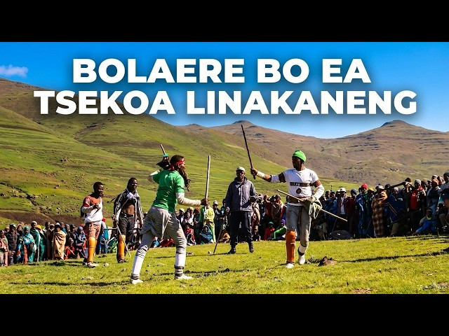

More than a destination
A country with its own rhythm.
Lesotho is a mountainous country surrounded by South Africa. Its high-altitude landscapes, villages and traditions give visitors a chance to experience a different pace of travel.
The Basotho people have a rich cultural heritage. The traditional Basotho blanket and mokorotlo hat are familiar symbols, while music, storytelling, food and community life continue to be important parts of everyday culture.
Every visitor can help protect what makes a place special by respecting local customs, asking before taking photographs of people and leaving natural areas as they found them.
Travel thoughtfully
Small choices matter.
Respect local life
Be polite, learn a few local greetings and ask permission before photographing people or private spaces.
Support local businesses
Choose local guides, makers and places to eat when possible. Your visit can help local communities.
Leave no trace
Please do not litter and respect the natural environment.